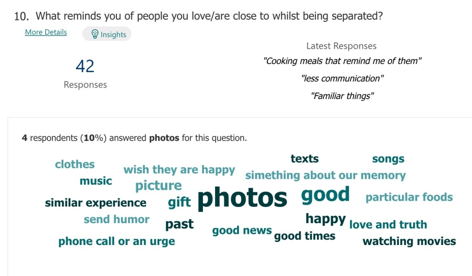

Project Overview
BonsAI is a design to help with Separation Anxiety Disorder in adults. The design follows a double diamond process. After questionnaire and interview, we painted persona and senario, refined ideas. In the end, an prototype is made by 3D-printing and embedded device. This work achieved the highest score in final assessment of my MSc module.
Topic Selection
To select an appropriate topic, we first began to think of ideas individually to put forward to the group. We employed an online collaboration tool to expand on each of our ideas and give us the opportunity to best communicate them to one another.This allowed for feedback to be received from each other on our ideas and also to help us think about our own ideas in different ways.

Topic Decision
Having thoroughly investigated our own topic areas and started to research each others, we met to discuss them and decided upon the topic of Separation Anxiety Disorder. Researching this further as a group across a couple of in-person sessions, we concluded that there is a great deal of research into this matter amongst children but very little in comparison focussing on adults. We felt the topic area definitely fit into the wellness theme and was a significant issue that we were all aware of.
Primary Research
Questionnaire Findings
The survey found half of the responders to be living alone with several of these having experienced anxious feelings from being separated from loved ones. The questionnaire revealed that this was most common in the mornings and evenings, whilst in their empty homes and specifically whilst in bed or their bedrooms. Additionally, most people liked to share parts of their day with loved ones when separated by a long distance.
Interview Findings
Scenarios
Accepting an idea
From our research we found it clear that a home product would be more beneficial to users and that it should be something that can be incorporated into their morning routines. This left us with two main ideas to begin pursuing.
A physical device consisting of an artificial Bonsai tree and various LEDs to convey information about the lives of someone a user is separated from. Features a mobile application to control aspects of the device and enable the people you are separated from to edit information about their branches. Information shared includes colours to reflect the temperature where they are, the weather and their mood.